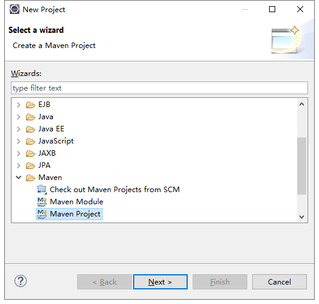
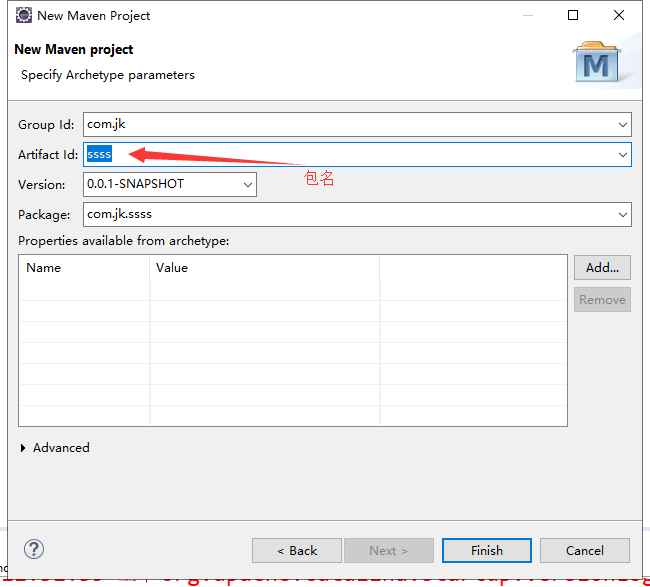

maven 下载：
https://maven.apache.org/ 官网 download 下载：Binary zip archive apache-maven-3.6.2-bin.zip
免安装解压
maven下的conf/settings.xml配置
本地仓库：
<localRepository>D:/repo</localRepository>
配置镜像中央仓库：阿里云中央仓库
<mirror>
<id>mirrorId</id>
<mirrorOf>repositoryId</mirrorOf>
<name>local_maven</name>
<url>https://maven.aliyun.com/repository/public</url>//阿里云zar包下载地址
</mirror>
配置环境变量：
在系统变量中配置：maven_home
配置到：D:\wordSoft\apache-maven-3.6.0 （maven根目录）
配置path： %maven_home%/bin;
展示一下界面表示配置成功
eclipse集成maven:
maven-->installations设置本地maven根目录
User Settings 配置本地maven settings.xml
配置完成后，
搭建框架进行测试 new project...里的maven project

选择下一步

搭建好之后后报错然后根据下一步操作